Code
install.packages("ggplot2")本节课学习用 ggplot2 绘制常见统计图形。
本节课结束后，应能完成以下任务：
ggplot2 的基本思想：用图层一步一步搭建图形。labs()、scale_*()、theme_*() 和 theme() 分别控制什么。coord_polar() 极坐标图形和 3D 图形作为拓展。ggsave() 保存图片，并在讲义渲染时只显示代码、不执行保存。ggplot2 是 R 中常用的数据可视化包。它的基本思想是：先给数据，再说明变量如何映射到图形上，最后选择图形类型。
如果电脑中还没有安装 ggplot2，先运行一次下面的代码。
install.packages("ggplot2")每次开始使用时，需要加载包。
library(ggplot2)
data(iris)本节课主要使用 R 自带的 iris 数据集。每一行是一朵鸢尾花，每一列是这朵花的一个信息。
head(iris) Sepal.Length Sepal.Width Petal.Length Petal.Width Species
1 5.1 3.5 1.4 0.2 setosa
2 4.9 3.0 1.4 0.2 setosa
3 4.7 3.2 1.3 0.2 setosa
4 4.6 3.1 1.5 0.2 setosa
5 5.0 3.6 1.4 0.2 setosa
6 5.4 3.9 1.7 0.4 setosa常用变量如下。
| 变量名 | 含义 | 类型 |
|---|---|---|
Sepal.Length |
萼片长度，单位 cm | 数值变量 |
Sepal.Width |
萼片宽度，单位 cm | 数值变量 |
Petal.Length |
花瓣长度，单位 cm | 数值变量 |
Petal.Width |
花瓣宽度，单位 cm | 数值变量 |
Species |
鸢尾花种类 | 分类变量 |
后面选图形时，主要看变量类型：两个数值变量看关系，分类变量加数值变量做分组比较。
ggplot2 最初由 Hadley Wickham 开发，现在由 tidyverse 团队维护。它的理论基础是 The Grammar of Graphics，中文常译为“图形语法”。
这句话可以简单理解为：
一张图不是一次性画出来的，而是由数据、映射、图层、标度、坐标和主题逐步组成。
本节课只讲入门用法。学习顺序是：先会画基本图形，再学习如何修改标题、颜色、主题，最后再讲趋势线、分面和保存图片。
ggplot2 最基本的写法如下。
ggplot(data = 数据, mapping = aes(x = 横轴变量, y = 纵轴变量)) +
geom_图形()这段代码包含三个部分：
data：使用哪一个数据集。aes()：把哪些变量放到图中。geom_*()：使用哪一种图形。例如，绘制花瓣长度和花瓣宽度的散点图。
ggplot(data = iris, mapping = aes(x = Petal.Length, y = Petal.Width)) +
geom_point()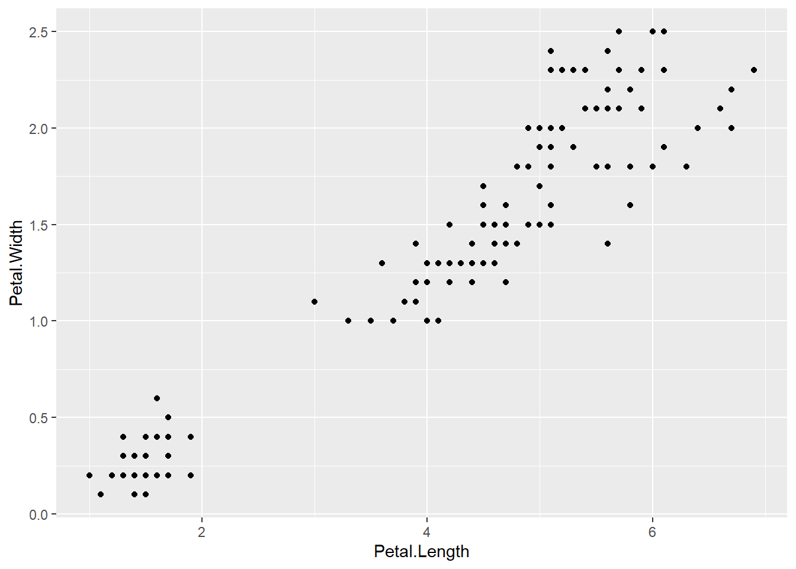
这个图中，每一个点代表一朵鸢尾花。
初学时可以把 ggplot2 代码看成“搭积木”。每一行通常只负责一件事。
| 代码部分 | 控制什么 | 初学时怎么理解 |
|---|---|---|
ggplot(data = 数据) |
使用哪个数据集 | 先把数据放到画布上 |
aes(x = ..., y = ...) |
哪些变量放到横轴、纵轴、颜色等位置 | 变量映射 |
geom_*() |
画什么图形元素 | 点、线、柱子、箱线、方块等 |
labs() |
标题、坐标轴名称、图例名称、说明文字 | 改文字 |
scale_*() |
颜色、填充色、坐标刻度、图例显示方式 | 改“变量如何显示” |
theme_*() |
一整套图形外观 | 换整体风格 |
theme() |
字体、图例位置、网格线、背景等细节 | 微调外观 |
facet_wrap() |
按分类变量拆成多张小图 | 分面比较 |
coord_*() |
坐标系统或坐标比例 | 改坐标显示方式 |
最常用的顺序是：
ggplot(数据, aes(变量映射)) +
geom_图形() +
labs(文字) +
scale_标度() +
theme_整体主题() +
theme(局部细节)不是每张图都要写完所有部分。基础图形通常只需要 ggplot()、aes() 和一个 geom_*()。
aes() 表示映射。映射的意思是：把数据中的变量放到图形属性上。
常见映射包括：
x：横轴位置。y：纵轴位置。color：点或线的颜色。fill：柱子、箱子或密度区域的填充颜色。shape：点的形状。例如，把 Species 映射到颜色上。
ggplot(iris, aes(x = Petal.Length, y = Petal.Width, color = Species)) +
geom_point()
如果颜色写在 aes() 里面，表示颜色跟变量有关。
ggplot(iris, aes(x = Petal.Length, y = Petal.Width, color = Species)) +
geom_point()
如果颜色写在 aes() 外面，表示所有点固定为同一种颜色。
ggplot(iris, aes(x = Petal.Length, y = Petal.Width)) +
geom_point(color = "steelblue")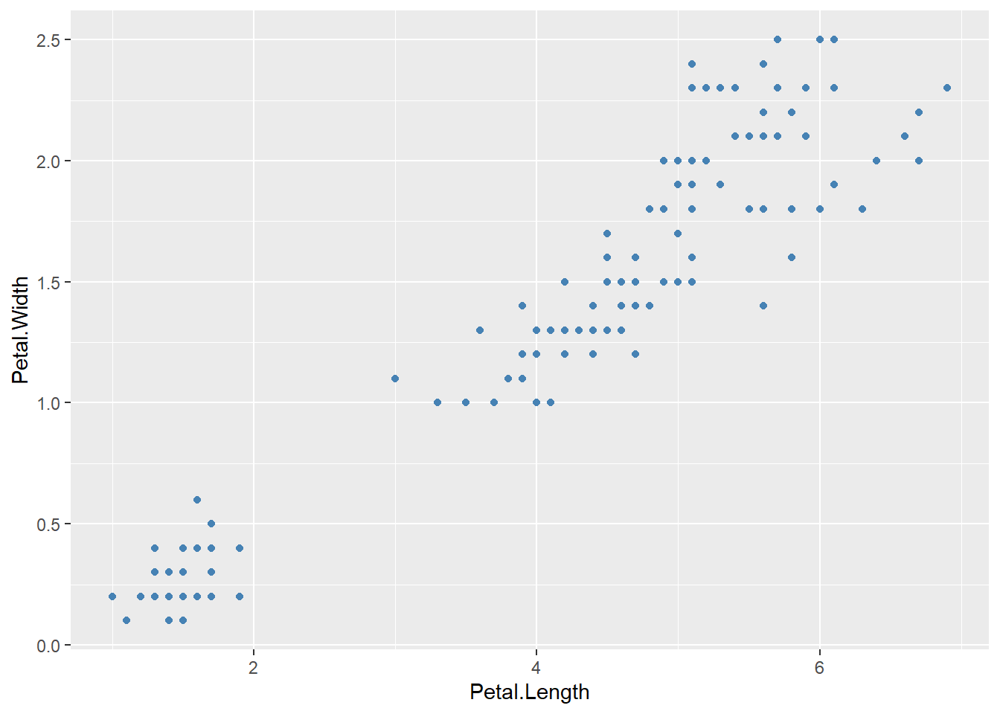
需要记住：
aes() 里面：变量映射。aes() 外面：固定样式。不同问题对应不同图形。先想清楚问题，再选择函数。
| 问题 | 变量类型 | 常用图形 |
|---|---|---|
| 两个数值变量有没有关系 | 数值 + 数值 | 散点图 geom_point() |
| 不同组的数值是否不同 | 分类 + 数值 | 箱线图 geom_boxplot() |
| 不同组的数值分布形状是否不同 | 分类 + 数值 | 小提琴图 geom_violin() |
| 一个数值变量集中在哪里 | 数值 | 直方图 geom_histogram() |
| 一个数值变量的平滑分布 | 数值 | 密度图 geom_density() |
| 每个类别有多少个样本 | 分类 | 条形图 geom_bar() |
| 已经算好的数值要画成柱子 | 分类 + 已计算数值 | 柱形图 geom_col() |
| 多个分组和多个变量的数值大小 | 分类 + 分类 + 数值 | 热图 geom_tile() |
| 数据随时间如何变化 | 时间 + 数值 | 折线图 geom_line() |
| 简单展示区域轮廓 | 经度 + 纬度 + 分组 | 地图 geom_polygon() |
下面先绘制基本图形。此时先不重点修改主题，只关注图形是否正确表达问题。
散点图用于观察两个数值变量之间的关系。
问题：花瓣越长，花瓣是否也越宽？
ggplot(iris, aes(x = Petal.Length, y = Petal.Width)) +
geom_point()
如果需要比较不同种类，可以把 Species 映射到颜色上。
ggplot(iris, aes(x = Petal.Length, y = Petal.Width, color = Species)) +
geom_point()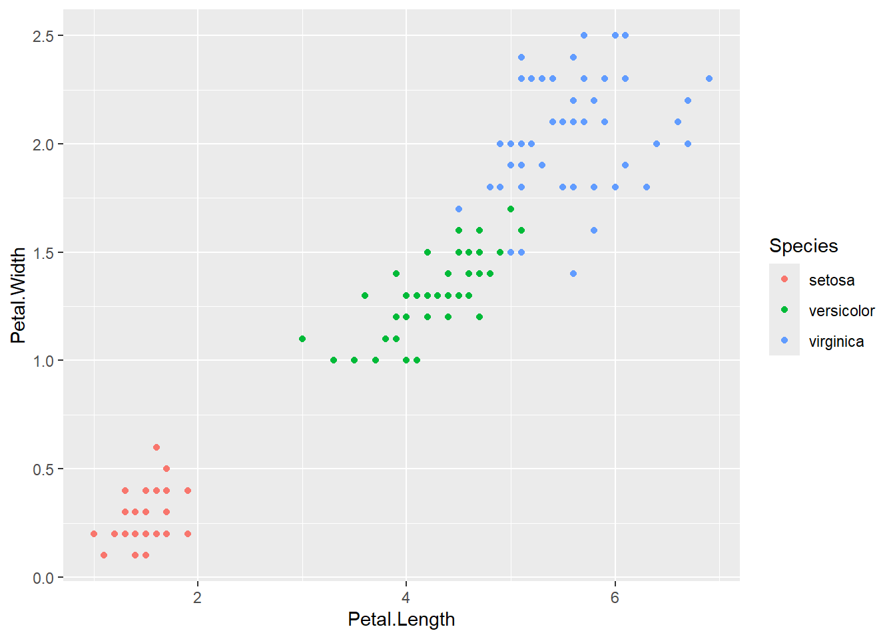
从图中可以看出，setosa 的花瓣明显较短、较窄；versicolor 和 virginica 有部分重叠，但整体仍有差异。
箱线图用于比较不同组的数值分布。
问题：三种鸢尾花的萼片长度是否不同？
ggplot(iris, aes(x = Species, y = Sepal.Length)) +
geom_boxplot()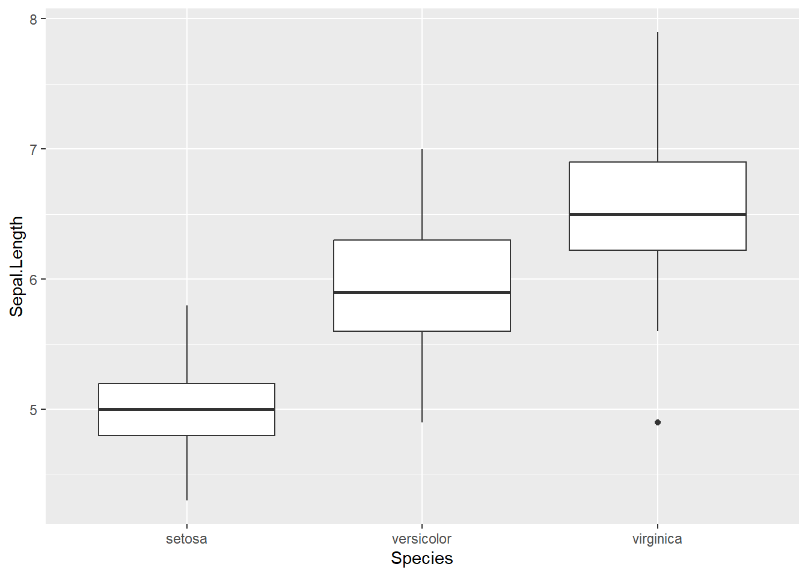
箱线图中：
也可以把原始数据点叠加到箱线图上。
ggplot(iris, aes(x = Species, y = Sepal.Length)) +
geom_boxplot(outlier.shape = NA) +
geom_jitter(width = 0.12, alpha = 0.5)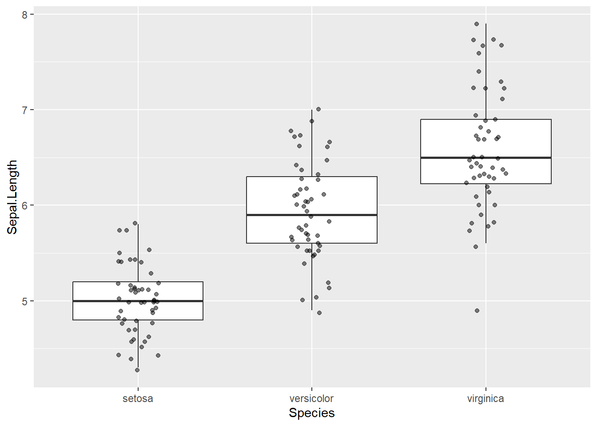
geom_jitter() 会给点增加一点随机横向偏移，避免点完全重叠。
小提琴图也用于比较不同组的数值分布。它和箱线图的区别是：箱线图强调中位数和四分位数，小提琴图更强调分布形状。
问题：三种鸢尾花的萼片长度分布形状是否不同？
ggplot(iris, aes(x = Species, y = Sepal.Length)) +
geom_violin()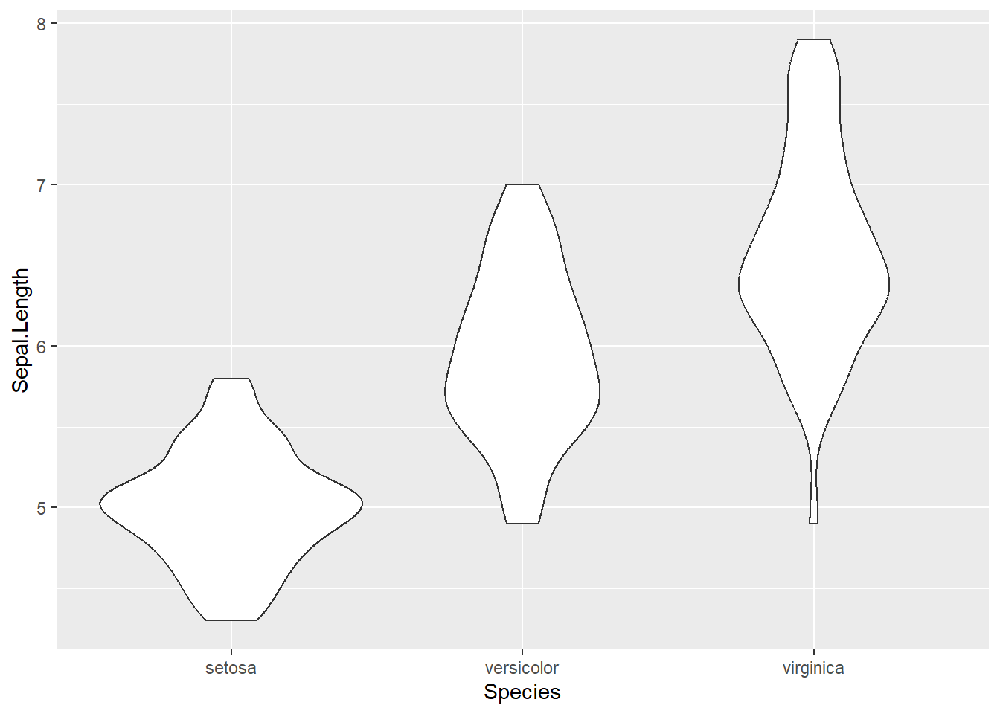
小提琴图越宽的位置，表示该数值附近的数据越多。
也可以在小提琴图中叠加一个窄箱线图。
ggplot(iris, aes(x = Species, y = Sepal.Length)) +
geom_violin(trim = FALSE) +
geom_boxplot(width = 0.12)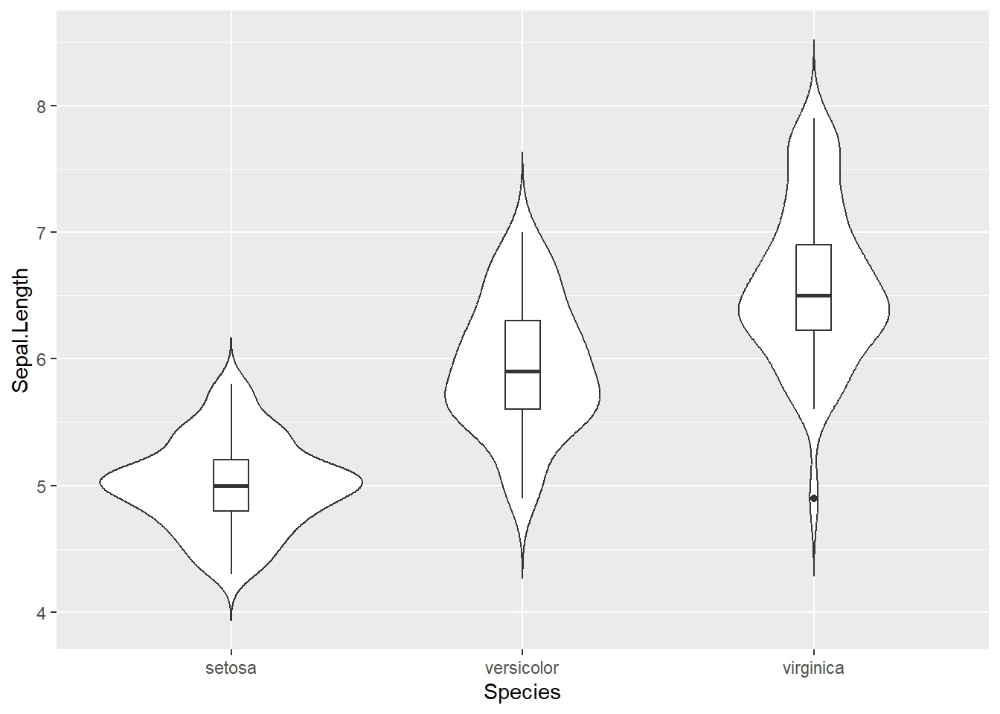
trim = FALSE 表示不把小提琴图的尾部裁剪到数据范围内。初学时只需要知道：它可以让分布形状显示得更完整。
直方图用于观察一个数值变量的分布。
问题：鸢尾花萼片长度主要集中在哪些范围？
ggplot(iris, aes(x = Sepal.Length)) +
geom_histogram(binwidth = 0.3)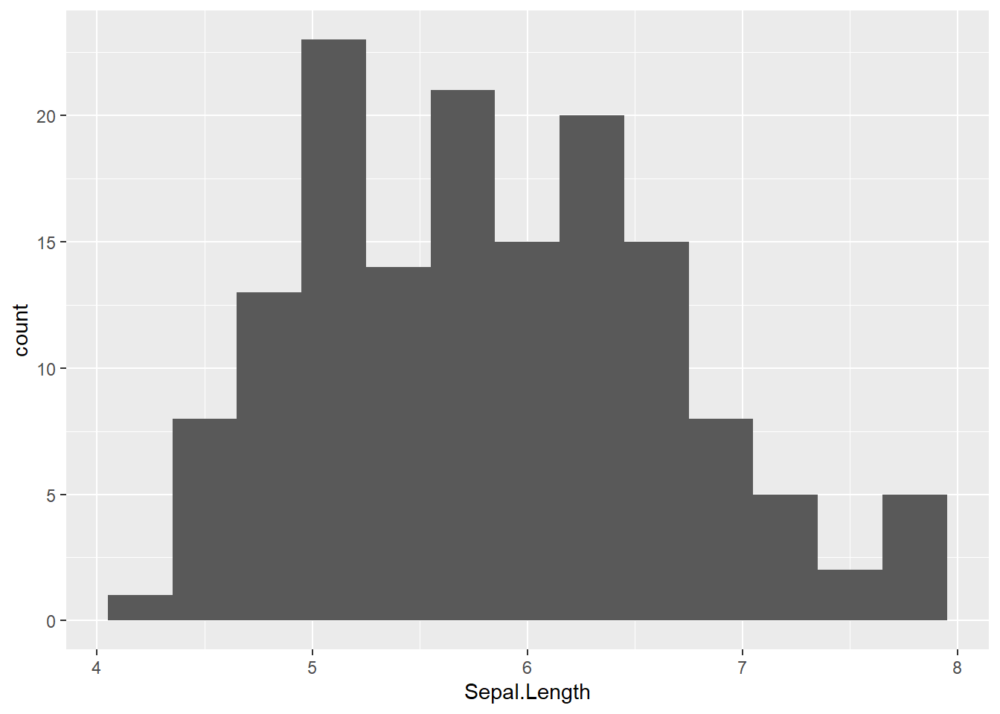
binwidth = 0.3 表示每 0.3 cm 分为一个区间。
如果想比较三种鸢尾花，可以把 Species 映射到填充颜色。
ggplot(iris, aes(x = Sepal.Length, fill = Species)) +
geom_histogram(binwidth = 0.3, position = "identity", alpha = 0.5)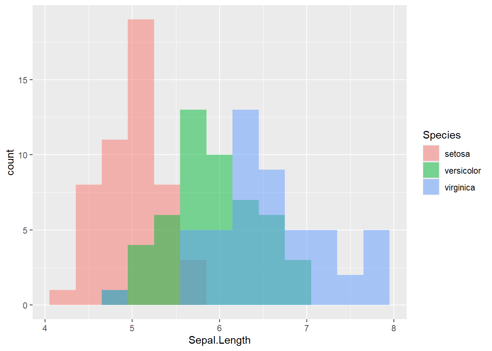
这里使用了两个参数：
position = "identity"：不同组的柱子重叠显示。alpha = 0.5：设置透明度，便于看到重叠部分。密度图可以看作平滑版的直方图，也用于观察数值变量的分布。
ggplot(iris, aes(x = Sepal.Length, color = Species)) +
geom_density(linewidth = 1)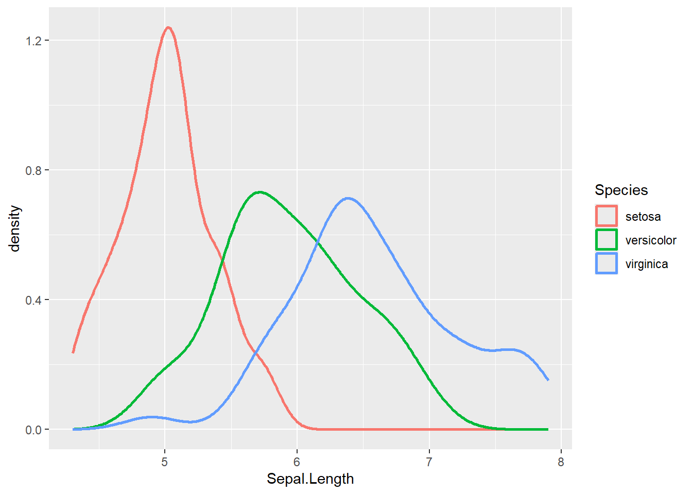
如果想让曲线下面有颜色，可以同时设置 fill。
ggplot(iris, aes(x = Sepal.Length, color = Species, fill = Species)) +
geom_density(alpha = 0.2, linewidth = 1)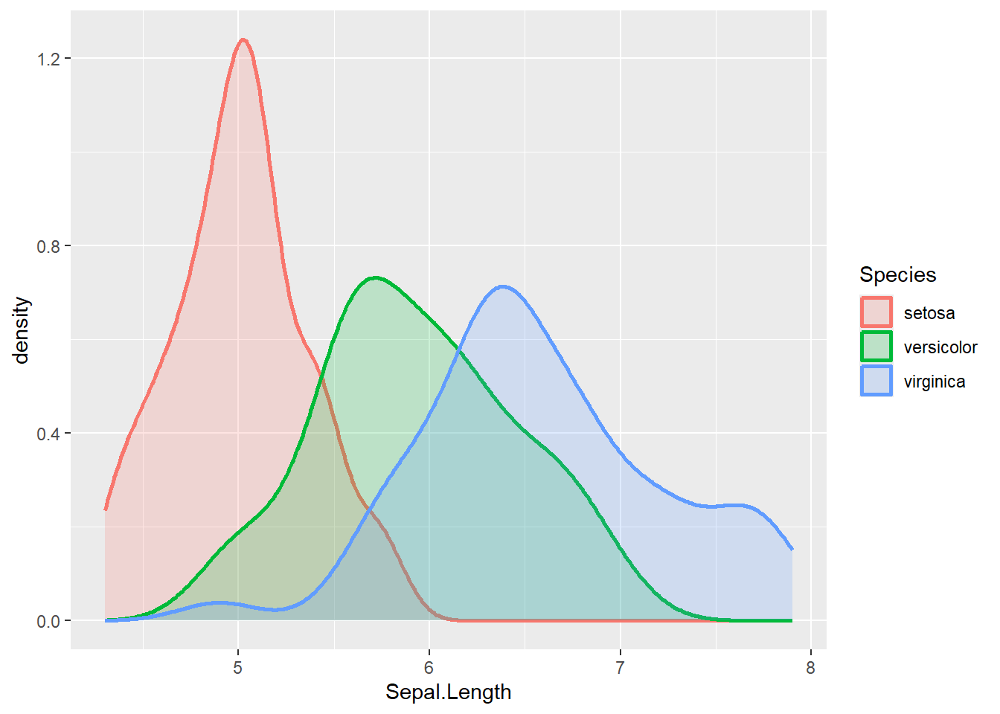
密度图适合比较分布形状。对初学者来说，直方图通常更直观。
条形图用于统计每个类别有多少个样本。
问题：三种鸢尾花各有多少朵？
ggplot(iris, aes(x = Species)) +
geom_bar()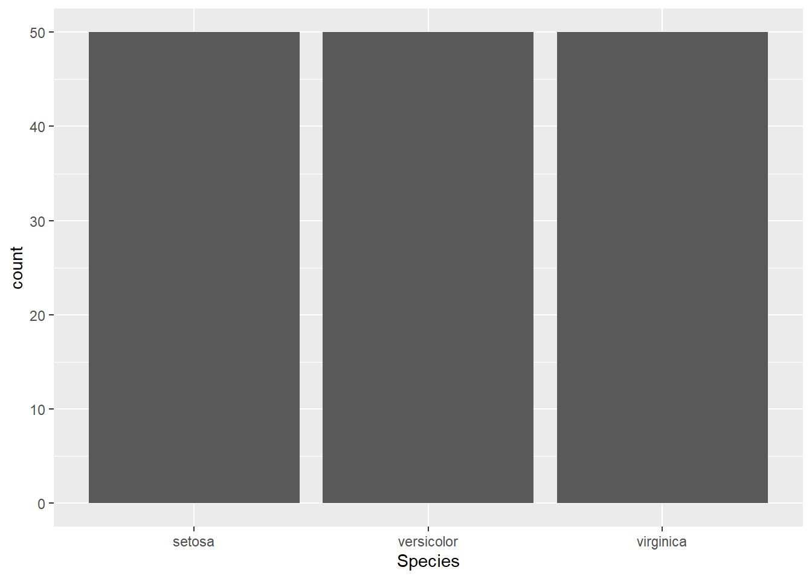
geom_bar() 没有指定 y，因为它会自动统计每个类别有多少行。
柱形图用于绘制已经计算好的数值。
例如，先计算三种鸢尾花的平均萼片长度。
iris_mean <- aggregate(Sepal.Length ~ Species, data = iris, FUN = mean)
iris_mean Species Sepal.Length
1 setosa 5.006
2 versicolor 5.936
3 virginica 6.588再把平均值画成柱形图。
ggplot(iris_mean, aes(x = Species, y = Sepal.Length)) +
geom_col()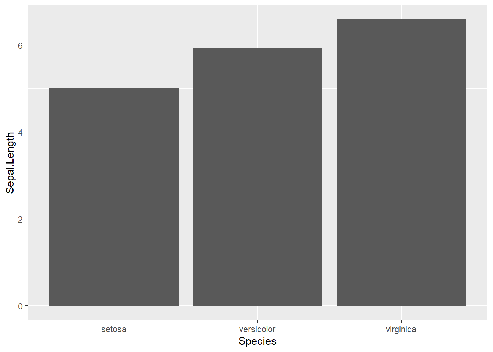
geom_bar() 和 geom_col() 的区别：
geom_bar()：原始数据中没有 y，函数自动计数。geom_col()：数据中已经有 y，函数直接画出数值。热图用于把数值大小显示为颜色深浅。它适合比较“多个组”和“多个变量”的数值。
这里仍然使用 iris 数据。问题是：三种鸢尾花在四个测量变量上的平均值有什么差异？
library(reshape2)
library(ggplot2)
cor_mat <- cor(mtcars)
cor_df <- melt(cor_mat)
ggplot(cor_df, aes(x = Var1, y = Var2, fill = value)) + geom_tile(color = "white") 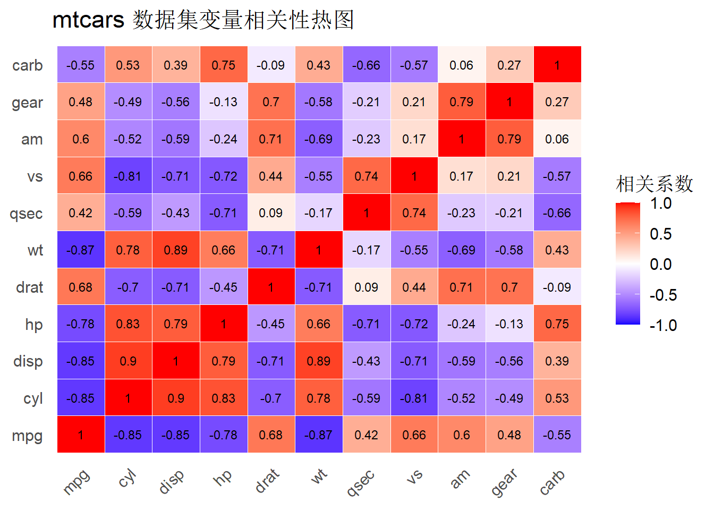
折线图适合表示时间顺序上的变化。iris 中每一行是一朵独立的花，没有时间顺序，因此不适合直接连线。
这里用 ggplot2 自带的公开数据集 economics 演示折线图。该数据记录了美国经济相关指标随时间的变化。
head(economics)# A tibble: 6 × 6
date pce pop psavert uempmed unemploy
<date> <dbl> <dbl> <dbl> <dbl> <dbl>
1 1967-07-01 507. 198712 12.6 4.5 2944
2 1967-08-01 510. 198911 12.6 4.7 2945
3 1967-09-01 516. 199113 11.9 4.6 2958
4 1967-10-01 512. 199311 12.9 4.9 3143
5 1967-11-01 517. 199498 12.8 4.7 3066
6 1967-12-01 525. 199657 11.8 4.8 3018绘制失业人数随时间变化的折线图。
ggplot(economics, aes(x = date, y = unemploy)) +
geom_line()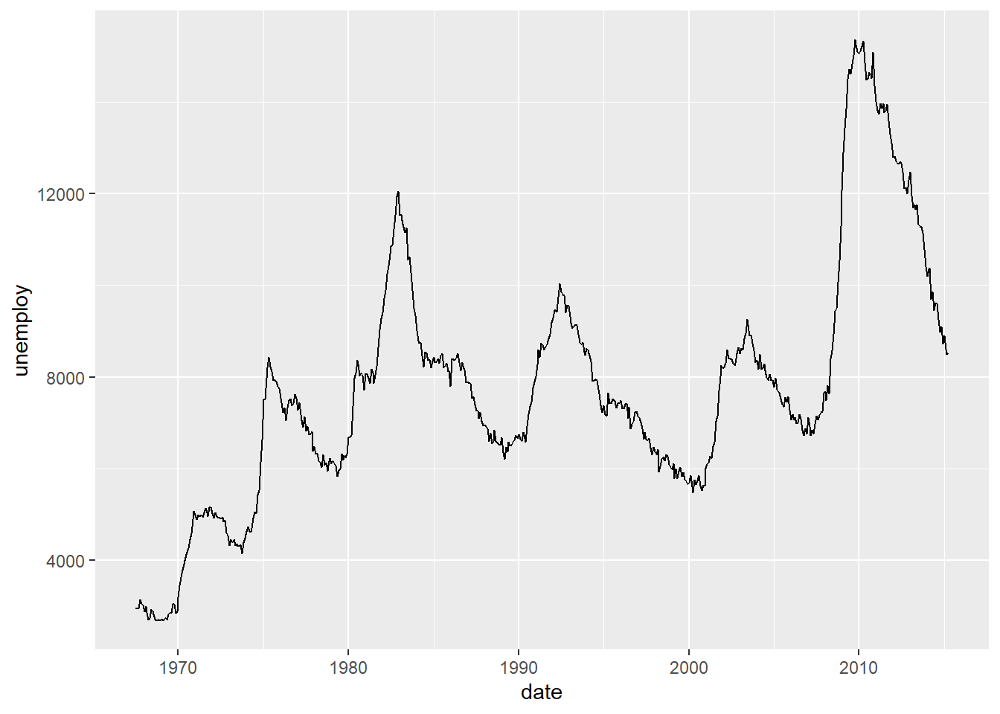
折线图的关键是：横轴通常是时间或有明确顺序的变量。
地图也是一种图形。最基本的地图可以理解为：用经度和纬度确定位置，再把区域边界画出来。
地图内容后面会单独讲。本节只展示最简单的世界地图轮廓。
如果没有安装 maps 包，需要先安装。
install.packages("maps")library(maps)
world_map <- map_data("world")
ggplot(world_map, aes(x = long, y = lat, group = group)) + geom_polygon() 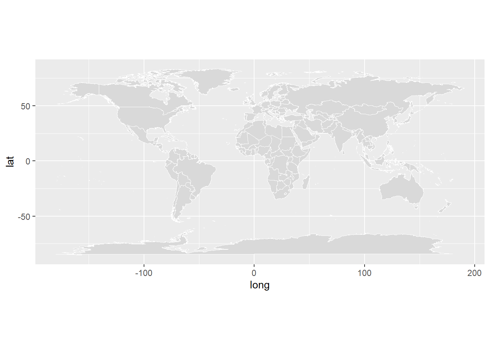
这段代码中：
long 表示经度。lat 表示纬度。group 表示哪些点属于同一个区域边界。geom_polygon() 用来画多边形区域。本节只需要知道地图也可以用 ggplot2 画。地图投影、空间数据格式和真实地理分析后面再讲。
前面的图大多使用普通直角坐标系：横轴是 x，纵轴是 y。ggplot2 也可以使用极坐标。极坐标用“角度”和“半径”确定位置，常见于圆形图、雷达图和一些数学曲线。
在 ggplot2 中，coord_polar() 负责把普通坐标转换成极坐标。它不改变数据，只改变显示方式。
下面画一个简单的数学花形曲线。先生成角度 theta，再用公式计算半径 r。\(r = 1 + 0.45\cos(6\theta)\)
theta <- seq(0, 2 * pi, length.out = 800)
polar_flower <- data.frame(
theta = theta,
r = 1 + 0.45 * cos(6 * theta)
)再把 theta 放在横轴，r 放在纵轴，最后使用 coord_polar() 转成极坐标。
ggplot(polar_flower, aes(x = theta, y = r)) +
geom_line(color = "#D55E00", linewidth = 1.1) +
coord_polar(theta = "x")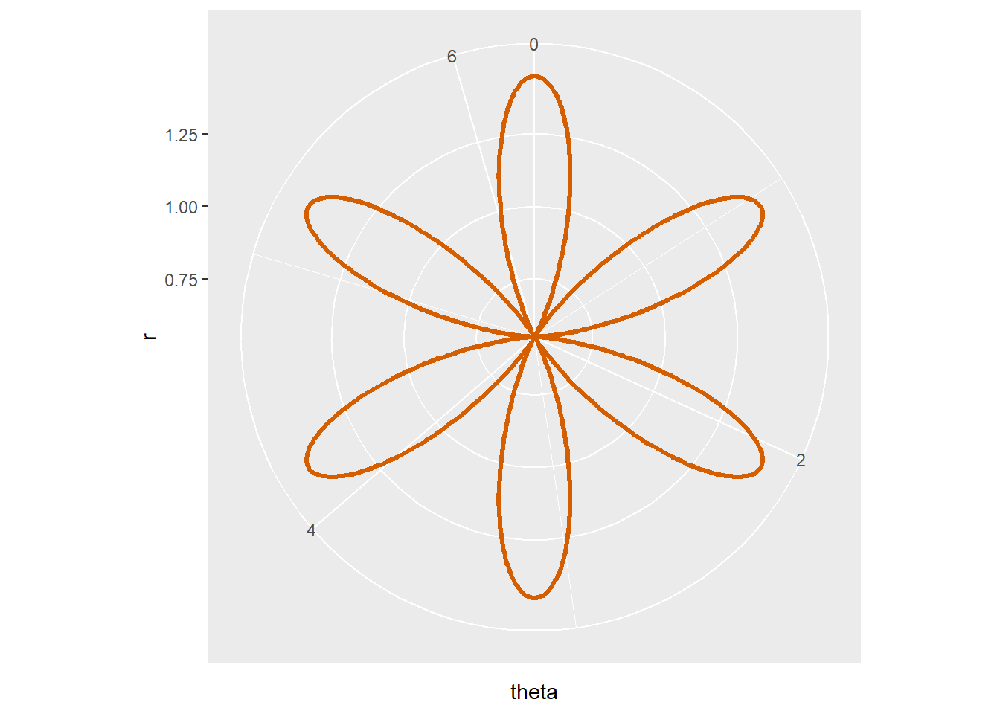
这段代码可以这样理解：
theta 控制旋转角度。r 控制离中心的距离。geom_line() 先画线。coord_polar() 再把线绕成圆形。如果改变 cos(6 * theta) 里的数字，花瓣数量和形状也会改变。
ggplot2 主要用于二维图形。如果想做可旋转的三维图，可以和其他包合作，例如 plotly、rgl 或 rayshader。
如果电脑中没有安装 plotly，先运行一次下面的代码。
library(ggplot2)
library(rayshader)
p <- ggplot(faithfuld, aes(waiting, eruptions, fill = density)) +
geom_raster() +
scale_fill_viridis_c() +
theme_minimal()
plot_gg(p, width = 5, height = 4, scale = 300)这段代码的作用是：
先用
ggplot2绘制一个二维密度热图，然后用rayshader将这个二维图渲染成三维立体图。
核心流程是：
数据 → ggplot 二维热图 → rayshader 三维渲染图可以简单理解为：
ggplot2负责画平面图，rayshader负责把平面图立起来。
本例使用 ggplot2 自带的 faithfuld 数据集。
head(faithfuld)# A tibble: 6 × 3
eruptions waiting density
<dbl> <dbl> <dbl>
1 1.6 43 0.00322
2 1.65 43 0.00384
3 1.69 43 0.00444
4 1.74 43 0.00498
5 1.79 43 0.00542
6 1.84 43 0.00574faithfuld 是美国黄石公园 Old Faithful 间歇泉数据的二维密度估计结果。
主要包含以下变量：
| 变量 | 含义 |
|---|---|
eruptions |
喷发持续时间 |
waiting |
两次喷发之间的等待时间 |
density |
对应位置的数据密度 |
这里需要注意：
faithfuld不是原始观测数据，而是已经计算好的二维密度网格数据。
基本图形能够回答问题后，再进行图形修饰。修饰的目的是让图更清楚，而不是改变数据本身。
推荐顺序如下：
labs()。scale_*()。theme_*()。theme()。这四类函数的作用不同。
| 函数 | 主要控制什么 | 常见例子 | 不负责什么 |
|---|---|---|---|
labs() |
图中的文字 | 标题、横轴名、纵轴名、图例名、数据来源 | 不改颜色和背景 |
scale_*() |
变量的显示方式 | 颜色方案、填充色、坐标刻度、图例范围 | 不改标题和主题 |
theme_*() |
整体外观 | theme_minimal()、theme_bw()、theme_classic() |
不改数据映射 |
theme() |
外观细节 | 图例位置、网格线、字体大小、坐标轴文字角度 | 不选择图形类型 |
简单记忆：
labs() 管文字。scale_*() 管变量怎么显示。theme_*() 管整体风格。theme() 管外观细节。labs() 用来添加标题、坐标轴名称、图例名称和数据来源说明。
ggplot(iris, aes(x = Petal.Length, y = Petal.Width, color = Species)) +
geom_point() +
labs(
title = "鸢尾花花瓣长度与花瓣宽度的关系",
x = "花瓣长度 (cm)",
y = "花瓣宽度 (cm)",
color = "鸢尾花种类",
caption = "数据来源：R 内置数据集 iris"
)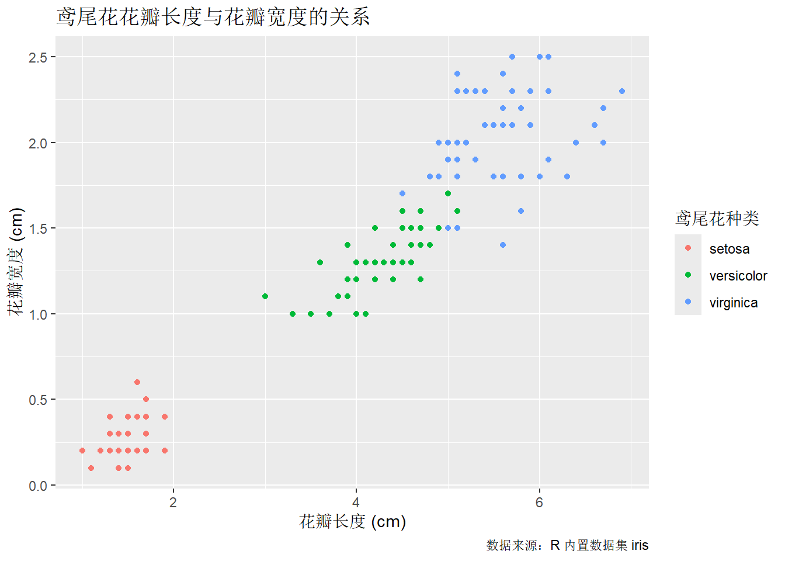
标题应说明图的主要内容。坐标轴名称应说明变量含义和单位。
scale_*() 控制变量如何显示在图中。函数名里的 color、fill、x、y 通常对应 aes() 里的映射。
常见用法如下。
| 函数 | 对应的映射 | 适合什么变量 | 作用 |
|---|---|---|---|
scale_color_manual() |
color |
分类变量 | 手动设置点或线的颜色 |
scale_fill_manual() |
fill |
分类变量 | 手动设置柱子、箱子等填充颜色 |
scale_fill_gradient() |
fill |
连续数值变量 | 用浅色到深色表示数值由小到大 |
scale_fill_gradient2() |
fill |
有中点的连续数值变量 | 用两端颜色表示低值和高值，中间颜色表示中点 |
scale_x_continuous() |
x |
连续数值变量 | 修改横轴刻度、范围、标签 |
scale_y_continuous() |
y |
连续数值变量 | 修改纵轴刻度、范围、标签 |
scale_fill_gradient2() 常用于相关系数这类数据，因为相关系数有负数、0 和正数。普通平均值热图通常用 scale_fill_gradient() 就够了。
先定义一组颜色。
iris_colors <- c(
setosa = "#0072B2",
versicolor = "#D55E00",
virginica = "#009E73"
)再应用到图中。
ggplot(iris, aes(x = Petal.Length, y = Petal.Width, color = Species)) +
geom_point(size = 2.2, alpha = 0.8) +
scale_color_manual(values = iris_colors) +
labs(
title = "鸢尾花花瓣长度与花瓣宽度的关系",
x = "花瓣长度 (cm)",
y = "花瓣宽度 (cm)",
color = "鸢尾花种类"
)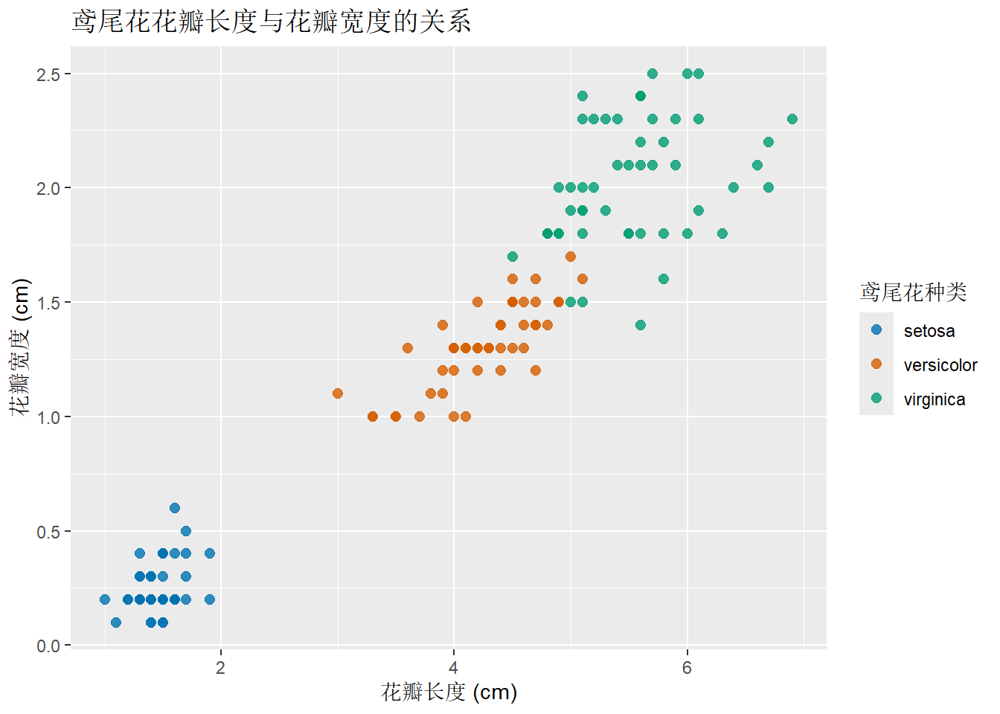
scale_color_manual() 改变颜色显示方式，但不改变数据。
主题控制图中的非数据元素，例如背景、网格线、字体大小和图例位置。
常用主题包括：
theme_gray()：默认主题，灰色背景。theme_bw()：白色背景，保留边框。theme_minimal()：背景更简洁。theme_classic()：经典样式，去掉主要背景网格。例如使用 theme_minimal()。
ggplot(iris, aes(x = Petal.Length, y = Petal.Width, color = Species)) +
geom_point(size = 2.2, alpha = 0.8) +
scale_color_manual(values = iris_colors) +
labs(
title = "鸢尾花花瓣长度与花瓣宽度的关系",
x = "花瓣长度 (cm)",
y = "花瓣宽度 (cm)",
color = "鸢尾花种类"
) +
theme_minimal(base_size = 14)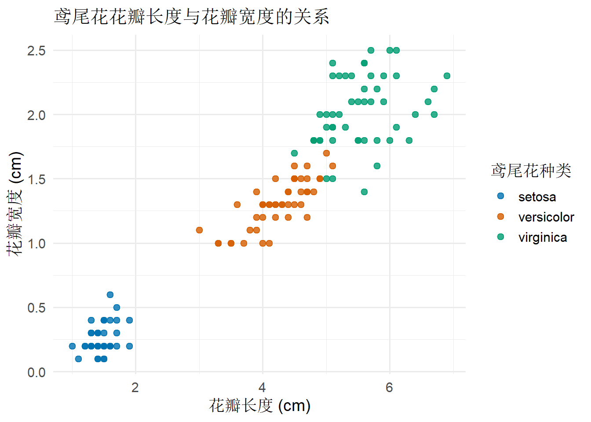
base_size = 14 表示设置基础字号。
theme() 用来修改主题中的具体元素。
下面的代码把图例放到底部，并去掉次要网格线。
ggplot(iris, aes(x = Petal.Length, y = Petal.Width, color = Species)) +
geom_point(size = 2.2, alpha = 0.8) +
scale_color_manual(values = iris_colors) +
labs(
title = "鸢尾花花瓣长度与花瓣宽度的关系",
x = "花瓣长度 (cm)",
y = "花瓣宽度 (cm)",
color = "鸢尾花种类"
) +
theme_minimal(base_size = 14) +
theme(
legend.position = "bottom",
panel.grid.minor = element_blank()
)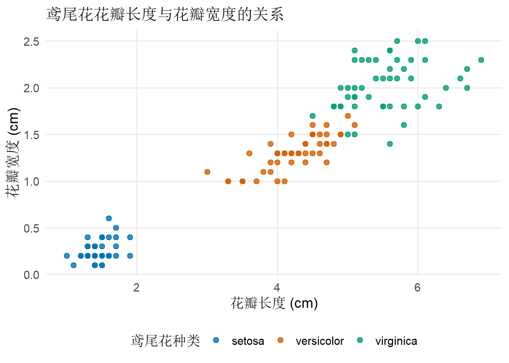
主题修改的逻辑是：
theme_*() 先确定整体风格。theme() 再调整局部细节。theme() 不负责修改数据变量，也不负责选择图形类型。趋势线用于辅助观察两个数值变量之间的整体关系。趋势线通常加在散点图上。
ggplot(iris, aes(x = Petal.Length, y = Petal.Width)) +
geom_point(alpha = 0.7) +
geom_smooth(method = "lm", se = FALSE, linewidth = 1) +
labs(
title = "花瓣长度与花瓣宽度的整体趋势",
x = "花瓣长度 (cm)",
y = "花瓣宽度 (cm)"
) +
theme_minimal(base_size = 14)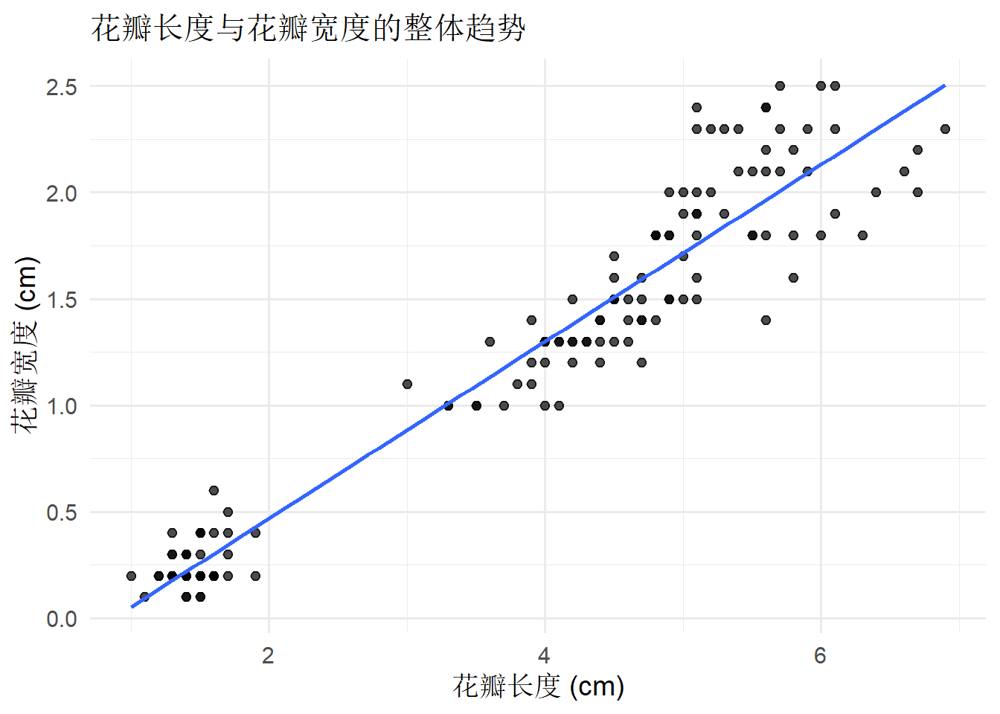
参数含义：
method = "lm"：使用线性模型拟合趋势线。se = FALSE：不显示置信区间阴影。linewidth = 1：设置线宽。如果把 Species 映射到颜色上，趋势线也会按种类分别绘制。
ggplot(iris, aes(x = Petal.Length, y = Petal.Width, color = Species)) +
geom_point(alpha = 0.75) +
geom_smooth(method = "lm", se = FALSE, linewidth = 1) +
scale_color_manual(values = iris_colors) +
labs(
title = "不同鸢尾花种类的花瓣长度与宽度趋势",
x = "花瓣长度 (cm)",
y = "花瓣宽度 (cm)",
color = "鸢尾花种类"
) +
theme_minimal(base_size = 14)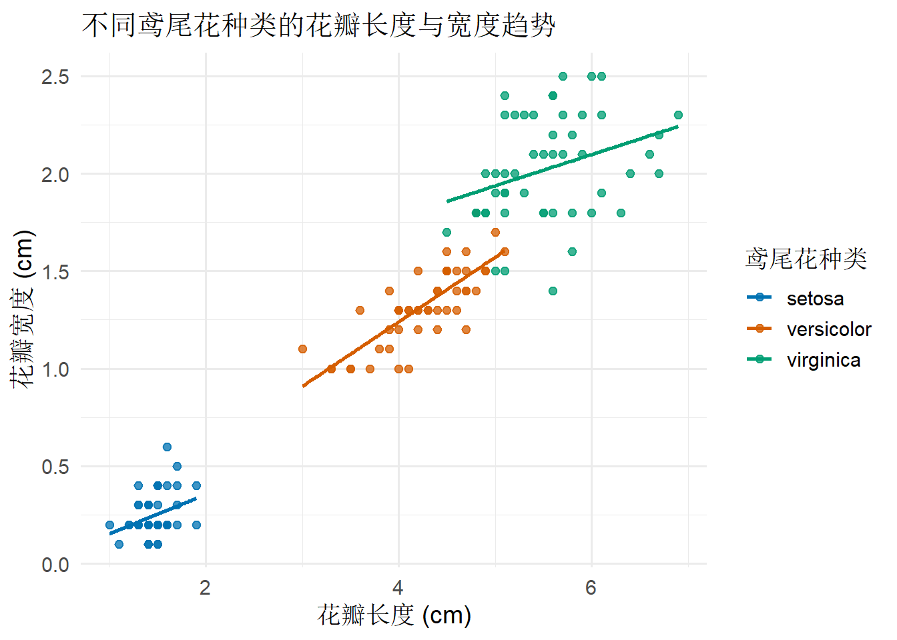
分面用于把同一张图按照某个分类变量拆成多张小图。
例如，按 Species 分成三个小图。
ggplot(iris, aes(x = Petal.Length, y = Petal.Width)) +
geom_point(color = "#0072B2", alpha = 0.75) +
facet_wrap(~ Species) +
labs(
title = "按鸢尾花种类分别观察花瓣关系",
x = "花瓣长度 (cm)",
y = "花瓣宽度 (cm)"
) +
theme_minimal(base_size = 14)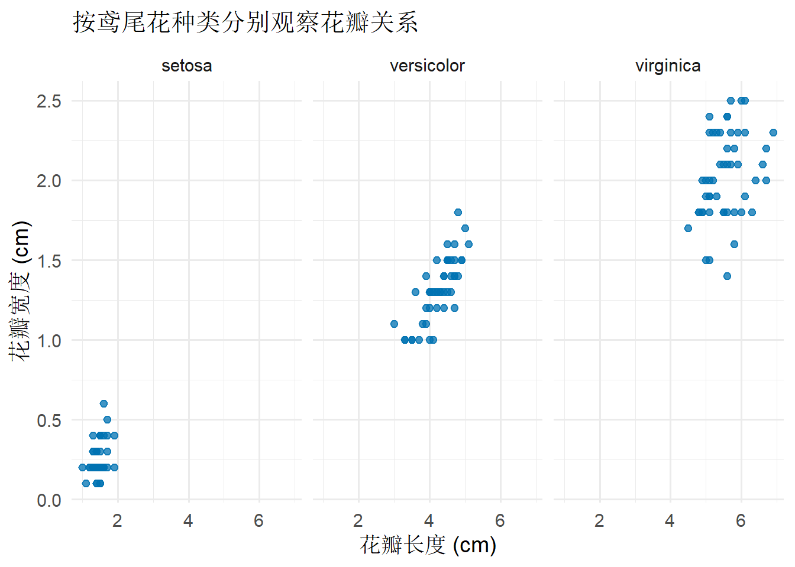
facet_wrap(~ Species) 的意思是：按照 Species 的不同取值，把图分成多个面板。
分面适合回答的问题是：不同组内部的规律是否相同。
科研图中常见的形式是“平均值 + 误差线”。先计算每组的平均值和标准差。
iris_summary <- aggregate(
Sepal.Length ~ Species,
data = iris,
FUN = function(x) c(mean = mean(x), sd = sd(x))
)
iris_summary <- do.call(data.frame, iris_summary)
names(iris_summary) <- c("Species", "mean", "sd")
iris_summary Species mean sd
1 setosa 5.006 0.3524897
2 versicolor 5.936 0.5161711
3 virginica 6.588 0.6358796再绘图。
ggplot(iris_summary, aes(x = Species, y = mean, fill = Species)) +
geom_col(width = 0.65, alpha = 0.75) +
geom_errorbar(
aes(ymin = mean - sd, ymax = mean + sd),
width = 0.15,
linewidth = 0.7
) +
scale_fill_manual(values = iris_colors) +
labs(
title = "三种鸢尾花萼片长度的平均值和标准差",
x = "鸢尾花种类",
y = "萼片长度 (cm)",
fill = "鸢尾花种类"
) +
theme_minimal(base_size = 14)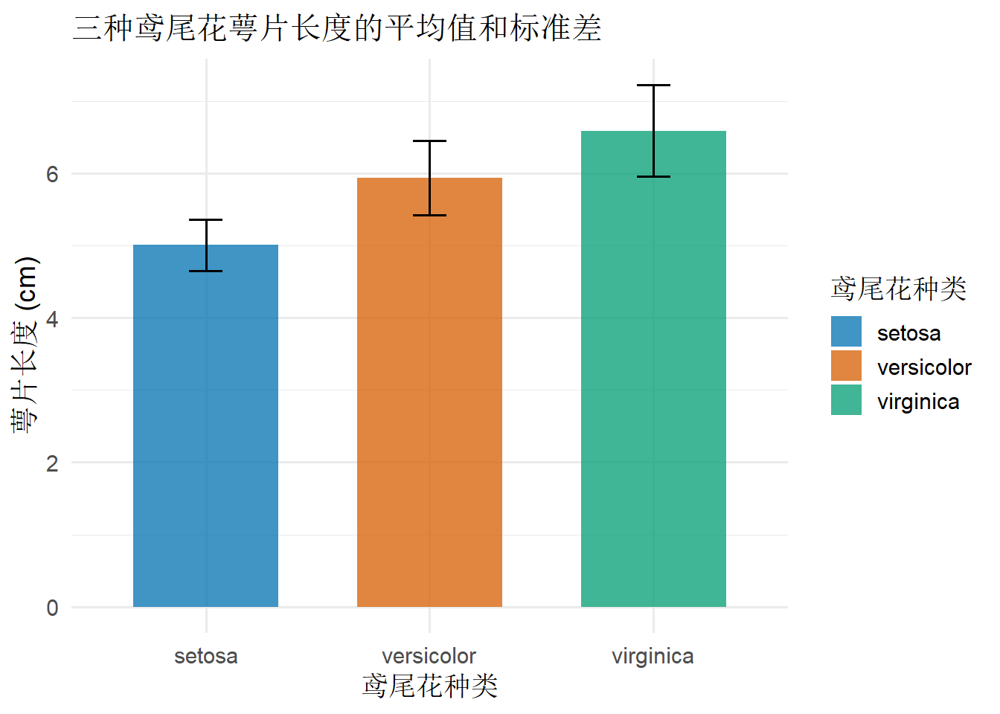
平均值图可以概括组间差异，但会隐藏原始数据。展示数据时，可同时考虑箱线图或原始散点。
ggsave() 用于保存图形。保存图片时，建议先把图存为对象，再保存对象。
本节所有保存图片的代码都设置为 eval: false。渲染讲义时只显示代码，不真正执行保存命令。
dir.create("figures", showWarnings = FALSE)
p <- ggplot(iris, aes(x = Petal.Length, y = Petal.Width, color = Species)) +
geom_point(size = 2.2, alpha = 0.8) +
scale_color_manual(values = iris_colors) +
labs(
title = "鸢尾花花瓣长度与花瓣宽度的关系",
x = "花瓣长度 (cm)",
y = "花瓣宽度 (cm)",
color = "鸢尾花种类"
) +
theme_minimal(base_size = 14)
ggsave(
filename = "figures/iris_petal_scatter.png",
plot = p,
width = 7,
height = 5,
dpi = 300
)保存为 PDF。
ggsave(
filename = "figures/iris_petal_scatter.pdf",
plot = p,
width = 7,
height = 5
)保存箱线图。
p_box <- ggplot(iris, aes(x = Species, y = Sepal.Length, fill = Species)) +
geom_boxplot(width = 0.55, alpha = 0.7) +
scale_fill_manual(values = iris_colors) +
labs(
title = "三种鸢尾花萼片长度比较",
x = "鸢尾花种类",
y = "萼片长度 (cm)",
fill = "鸢尾花种类"
) +
theme_minimal(base_size = 14)
ggsave(
filename = "figures/iris_sepal_length_boxplot.png",
plot = p_box,
width = 7,
height = 5,
dpi = 300
)保存图片时需要注意：
width 和 height 控制图片大小。dpi = 300 常用于论文、报告和打印。把下面代码中的 Petal.Length 和 Petal.Width 改为 Sepal.Length 和 Sepal.Width，绘制萼片长度和萼片宽度的散点图。
ggplot(iris, aes(x = Petal.Length, y = Petal.Width, color = Species)) +
geom_point()请根据问题选择合适图形。
| 问题 | 合适图形 |
|---|---|
| 花瓣长度和花瓣宽度有没有关系？ | |
| 三种花的花瓣长度是否不同？ | |
| 三种花的萼片长度分布形状是否不同？ | |
| 萼片长度主要集中在哪些范围？ | |
| 三种花各有多少朵？ | |
| 美国失业人数随时间如何变化？ | |
| 三种花在四个测量变量上的平均值如何比较？ |
参考答案：
| 问题 | 合适图形 |
|---|---|
| 花瓣长度和花瓣宽度有没有关系？ | 散点图 |
| 三种花的花瓣长度是否不同？ | 箱线图 |
| 三种花的萼片长度分布形状是否不同？ | 小提琴图 |
| 萼片长度主要集中在哪些范围？ | 直方图 |
| 三种花各有多少朵？ | 条形图 |
| 美国失业人数随时间如何变化？ | 折线图 |
| 三种花在四个测量变量上的平均值如何比较？ | 热图 |
说明下面两行代码的区别。
geom_point(aes(color = Species))
geom_point(color = "blue")答案要点：
aes(color = Species)：颜色由 Species 变量决定。color = "blue"：所有点固定为蓝色。修改下面代码中的文件名，把图片保存为自己的作业图片。渲染讲义时不要执行。
ggsave(
filename = "figures/my_iris_plot.png",
plot = p,
width = 7,
height = 5,
dpi = 300
)ggplot2 的基本结构是：
ggplot(data = 数据, mapping = aes(x = 横轴变量, y = 纵轴变量)) +
geom_图形()需要重点记住：
coord_polar() 可以把普通图形转换成极坐标图形。aes() 里面是变量映射，写在 aes() 外面是固定样式。labs()、scale_*()、theme_*()、theme()。geom_smooth()，分面用 facet_wrap()。ggsave()，讲义中保存代码设置为 eval: false。map_data()：https://ggplot2.tidyverse.org/reference/map_data.htmllinewidth 的官方说明：https://ggplot2.tidyverse.org/reference/scale_linewidth.html